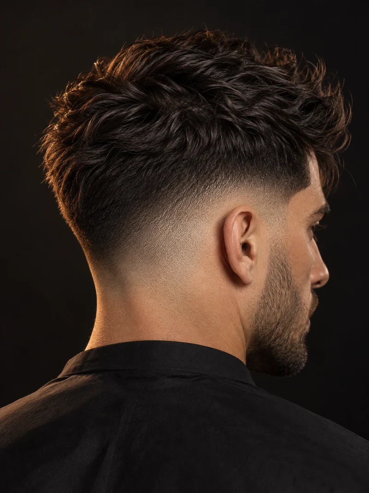
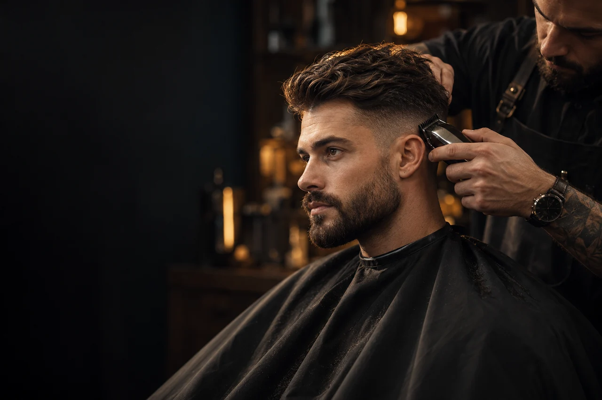
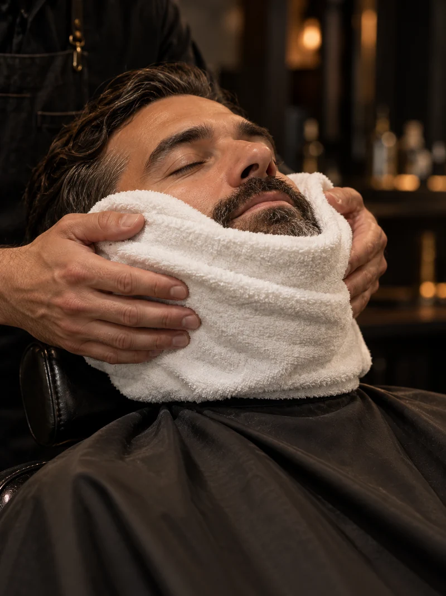
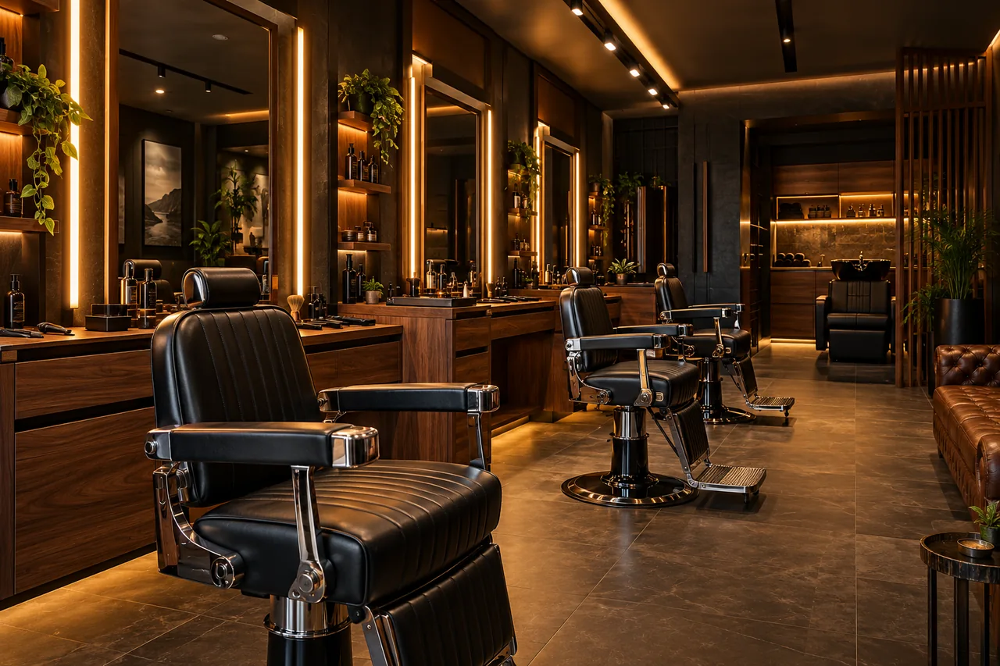

Corte masculino
Na tesoura, na máquina ou no degradê. Você traz a ideia, a gente cuida do acabamento.
- Conversa sobre o corte
- Acabamento e finalização
R$4540 minutos

Corte, barba ou os dois.
Escolha o seu serviço.

Na tesoura, na máquina ou no degradê. Você traz a ideia, a gente cuida do acabamento.

Desenho e alinhamento que respeitam o formato do seu rosto, com o conforto da toalha quente.
Cabelo e barba no mesmo atendimento. Um visual alinhado por inteiro, sem precisar escolher.

Atenção e paciência para os pequenos. Um corte confortável, com o responsável por perto.
serviços para escolher
conforme o seu serviço
dias de atendimento na semana
Um bom corte começa na conversa. Na Bravo, a gente escuta o que você quer e cuida de cada detalhe, da primeira passada ao acabamento.
Tesoura, máquina e barba com toalha quente. Técnica no corte, calma no atendimento.
Conheça o espaçoAgendar ajuda a escolher o melhor horário. O atendimento sem agendamento depende da disponibilidade da equipe.
Sim. Na escolha do serviço, selecione um profissional ou “Sem preferência”. Os nomes e horários desta demonstração são ilustrativos.
Sim. O corte infantil tem duração prevista de 40 minutos. Um responsável deve acompanhar o atendimento.
O modelo prevê Pix, dinheiro e cartões, com pagamento no atendimento. Não há cobrança neste site demonstrativo.
Entre em contato com a equipe para combinar outro horário. Nesta demonstração, nenhuma reserva real é criada.